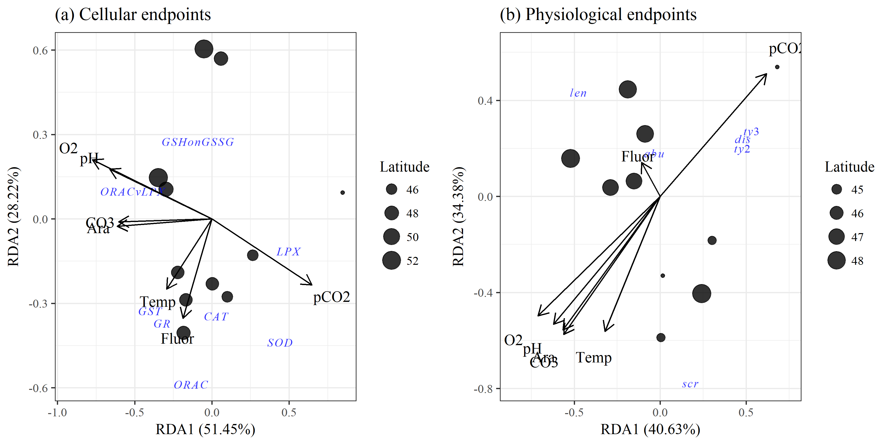
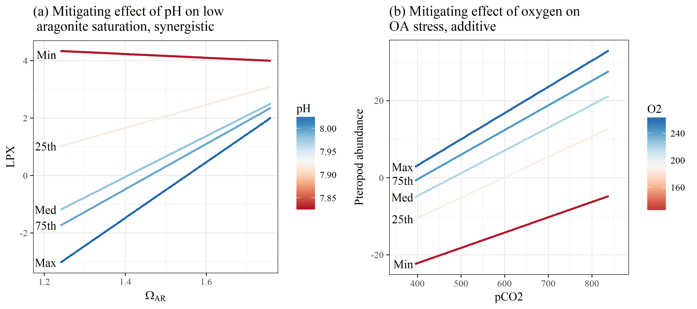

Pteropod stressor interaction: figures
library(tidyverse)
library(vegan)
library(ggord)
library(scales)
library(effects)
library(knitr)
library(gridExtra)
library(grid)
source("R/funcs.R")
opts_chunk$set(fig.align = 'center', message = F, echo = T, cache = F, dev = 'png', dev.args = list(family = 'serif'), dpi = 400, fig.pos = '!h', warning = F, background = 'white', out.width = '100%',
fig.process = function(x) {
x2 = sub('-\\d+([.][a-z]+)$', '\\1', x)
if (file.rename(x, x2)) x2 else x
})
data(envdat)
data(ptedat)
envchr <- c('Lat', 'pCO2', 'pH', 'CO3', 'Ara', 'O2', 'Temp', 'Fluor')
biochr <- c('CAT', 'GR', 'GSHonGSSG', 'GST', 'LPX', 'ORAC', 'SOD', 'ORACvLPX')
phychr <- c('abu', 'dis', 'len', 'ty2', 'ty3', 'scr')# biomarker rda model
dat_bio <- ptedat %>%
select(one_of('CTD', biochr)) %>%
na.omit %>%
inner_join(envdat, by = 'CTD') %>%
select(one_of(c('CTD', envchr, biochr))) %>%
data.frame %>%
remove_rownames %>%
column_to_rownames('CTD')
envphy <- select(dat_bio, one_of(envchr)) %>%
select(-Lat) %>%
decostand(method = 'range')
ptephy <- select(dat_bio, one_of(biochr)) %>%
decostand(method = 'range')
biomod <- rda(ptephy, envphy)
# physiology rda model
dat_phy <- ptedat %>%
select(one_of('CTD', phychr)) %>%
na.omit %>%
inner_join(envdat, by = 'CTD') %>%
select(one_of(c('CTD', envchr, phychr))) %>%
data.frame %>%
remove_rownames %>%
column_to_rownames('CTD')
envphy <- select(dat_phy, one_of(envchr)) %>%
select(-Lat) %>%
decostand(method = 'range')
ptephy <- select(dat_phy, one_of(phychr)) %>%
decostand(method = 'range')
phymod <- rda(ptephy, envphy)# globals
coord_fix <- F
repel <- F
addsize <- 3
alpha <- 0.8
arrow <- 0.3
cols <- 'lightblue'
p1a <- ggord(biomod, ptslab = T, parse = T, repel = repel, coord_fix = coord_fix, addsize = addsize, size = dat_bio$Lat, sizelab = 'Latitude', alpha = alpha, arrow = arrow, ellipse = F) +
ggtitle('(a) Cellular endpoints')
p2a <- ggord(phymod, ptslab = T, parse = T, repel = repel, coord_fix = coord_fix, addsize = addsize, size = dat_phy$Lat, sizelab = 'Latitude', alpha = alpha, arrow = arrow, ellipse = F) +
ggtitle('(b) Physiological endpoints')
grid.arrange(p1a, p2a, ncol = 2)
Fig. 1 Results of redundancy analyses for environmental variables with (a) cellular and (b) physiological endpoints of pteropod response to OA stressors. Points are site locations in multivariate space with the size proportional to latitude. Separate RDAs were created for cellular and physiological endpoints because not all data were available across all stations.
# physiology rda model
dat_cor <- ptedat %>%
select(one_of('CTD', phychr, biochr)) %>%
# na.omit %>%
left_join(envdat, by = 'CTD') %>%
data.frame %>%
remove_rownames %>%
column_to_rownames('CTD')
# all correlations
crs <- crossing(var1 = names(dat_cor), var2 = names(dat_cor)) %>%
filter(var1 != var2) %>%
rownames_to_column() %>%
group_by(rowname) %>%
nest %>%
mutate(
crs = map(data, function(x){
# variables
vr1 <- dat_cor[[x$var1]]
vr2 <- dat_cor[[x$var2]]
# pearson
pr_ts <- cor.test(vr1, vr2, method = 'pearson')
pr_cr <- round(pr_ts$estimate, 2)
pr_pv <- p_ast(pr_ts$p.value)
pr <- paste(pr_cr, pr_pv)
out <- data.frame(pr = pr, stringsAsFactors = F)
return(out)
})
) %>%
unnest %>%
select(-rowname)levs <- c(sort(envchr), sort(biochr), sort(phychr))
prplo <- crs %>%
separate(pr, c('cor', 'sig'), sep = ' ') %>%
filter(var1 %in% levs & var2 %in% levs) %>%
mutate(
cor = as.numeric(cor),
var1 = factor(var1, levels = rev(levs)),
var2 = factor(var2, levels = rev(levs)),
sig = gsub('ns', '', sig)
)
pbase <- theme(
panel.grid.major = element_blank(),
panel.grid.minor = element_blank(),
axis.text.x = element_text(angle = 45, hjust = 1, vjust = 1, size = 8),
axis.text.y = element_text(size = 8),
legend.position = 'top',
plot.margin = unit(c(0,4,0,0), "lines"),
strip.background = element_blank(),
strip.text.y = element_text(angle = 0, hjust = 0, vjust = 0.5),
panel.background = element_rect(fill = 'black')
)
outlab <- data.frame(
y = c(3.5, 10.5, 18.5),
lab = c('Population/\nPhysiology', 'Cellular', 'Environment')
)
p <- ggplot(prplo) +
geom_tile(aes(y = var1, x = var2, fill = cor), colour = 'black') +
geom_text(aes(y = var1, x = var2, label = sig)) +
annotation_custom(grob = textGrob(label = outlab$lab[1], hjust = 0, gp = gpar(cex = 0.7)),
ymin = outlab$y[1], ymax = outlab$y[1], xmin = 23, xmax = 23) +
annotation_custom(grob = textGrob(label = outlab$lab[2], hjust = 0, gp = gpar(cex = 0.7)),
ymin = outlab$y[2], ymax = outlab$y[2], xmin = 23, xmax = 23) +
annotation_custom(grob = textGrob(label = outlab$lab[3], hjust = 0, gp = gpar(cex = 0.7)),
ymin = outlab$y[3], ymax = outlab$y[3], xmin = 23, xmax = 23) +
pbase +
scale_y_discrete('', expand = c(0, 0)) +
scale_x_discrete('', expand = c(0, 0)) +
scale_fill_gradient2('Correlation', low = muted("blue"), mid = "white", high = muted("red"), midpoint = 0) +
guides(fill = guide_colourbar(barheight = 0.5, barwidth = 5, label.theme = element_text(size = 6, angle = 0))) +
geom_hline(yintercept = 6.5, size = 1.5) +
geom_hline(yintercept = 14.5, size = 1.5) +
geom_vline(xintercept = 6.5, size = 1.5) +
geom_vline(xintercept = 14.5, size = 1.5)
# Code to override clipping
gt <- ggplot_gtable(ggplot_build(p))
gt$layout$clip[gt$layout$name == "panel"] <- "off"
grid.draw(gt) Fig. 2 Correlation matrix of environmental variables, cellular response endpoints, and population (abundance) and physiological response endpoints for pteropods. Darker red values are strong positive correlations and darker purple values are strong negative correlations. Significance values at alpha = 0.05 are shown by stars (p < 0.05 *, p < 0.005 *).
Fig. 2 Correlation matrix of environmental variables, cellular response endpoints, and population (abundance) and physiological response endpoints for pteropods. Darker red values are strong positive correlations and darker purple values are strong negative correlations. Significance values at alpha = 0.05 are shown by stars (p < 0.05 *, p < 0.005 *).
# abu, no syngeristics
data(modex1)
# lpx, synergistic
data(modex2)
x <- modex2$model %>%
.[, -1] %>%
data.frame %>%
as.list %>%
map(range) %>%
map(function(x) seq(x[1], x[2], length = 100))
x$pH <- modex2$model$pH %>% quantile
nms <- names(x)
x <- crossing(x[[1]], x[[2]])
names(x) <- nms
prd_vl <- predict(modex2, newdata = x) %>%
data.frame(., x)
names(prd_vl)[1] <- all.vars(formula(modex2))[1]
toplo <- prd_vl
yval <- toplo %>% group_by(pH) %>% summarize(LPX = min(LPX))
xlab <- data.frame(
lab = rev(c('Max', '75th', 'Med', '25th', 'Min')),
x = 1.23, y = yval$LPX,
stringsAsFactors = F)
xlab[1, 3] <- 4.2
p1 <- ggplot() +
geom_line(data = toplo, aes(x = Ara, y = LPX, group = pH, colour = pH), size = 1) +
geom_text(data = xlab, aes(x= x, y = y, label = lab), hjust = 1) +
theme_bw() +
coord_cartesian(xlim = c(1.2, 1.75)) +
xlab(expression(Omega[AR])) +
scale_colour_gradientn(colours = RColorBrewer::brewer.pal(9, 'RdBu')) +
ggtitle("(a) Mitigating effect of pH on low\n aragonite saturation, synergistic")
# abu additive
data(modex1)
x <- modex1$model %>%
.[, -1] %>%
data.frame %>%
as.list %>%
map(range) %>%
map(function(x) seq(x[1], x[2], length = 100))
x$O2 <- modex1$model$O2 %>% quantile
nms <- names(x)
x <- crossing(x[[1]], x[[2]])
names(x) <- nms
prd_vl <- predict(modex1, newdata = x, type = 'response') %>%
data.frame(., x)
names(prd_vl)[1] <- all.vars(formula(modex1))[1]
toplo <- prd_vl
yval <- toplo %>% group_by(O2) %>% summarize(abu = min(abu))
xlab <- data.frame(
lab = rev(c('Max', '75th', 'Med', '25th', 'Min')),
x = 390, y = yval$abu,
stringsAsFactors = F)
p2 <- ggplot() +
geom_line(data = toplo, aes(x = pCO2, y = abu, group = O2, colour = O2), size = 1) +
geom_text(data = xlab, aes(x= x, y = y, label = lab), hjust = 1) +
theme_bw() +
coord_cartesian(xlim = c(360, 860)) +
scale_colour_gradientn(colours = RColorBrewer::brewer.pal(9, 'RdBu')) +
scale_y_continuous('Pteropod abundance') +
ggtitle("(b) Mitigating effect of oxygen on\nOA stress, additive")
grid.arrange(p1, p2, ncol = 2) Fig. 3 Examples of model interactions of co-occuring environmental variables on pteropod response measures. Plot (a) shows a synergistic effect between pH and aragonite saturation on LPX expression. Plot (b) shows an additive response of oxyxgen and OA stress (pCO2) on pteropod abundance. Both y-axes are transformed to conform to model output. Covarying environmental variables were held constant at the minimum, 25th, median, 75th, and maximum values in the observed data.